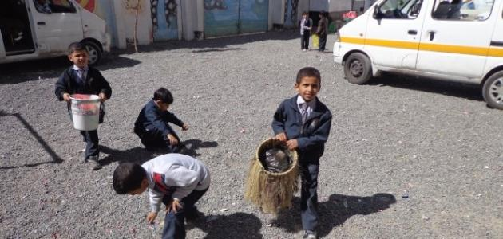

اهميه نظافه المدرسه
جذب الطلاب إلى المدرسة تلعب البيئة المدرسية النظيفة دوراً مهماً في إنشاء بيئة تعليمية منتجة، وهناك العديد من الفوائد التي تعود بشكل إيجابي على التواجد بيئة مدرسية نظيفة داخل نظام التعليم في المدرسة، ومنها:[١] تكوين بيئة مريحة وأكثر أناقة في البيت والمدرسة؛ حيث يساعد تحفيز الطلاب على المحافظة على مستوى عالٍ من النظافة خلال مراحل حياتهم الدراسية على ذلك. تشجيع الطلاب على الذهاب إلى المدرسة بشكل منتظم ومستمر. جذب العديد من المعلمين ذوي الخبرة التعليمية العالية، الذين يلعبون دوراً مهماً في تطوير مستوى التعلم والتعليم داخل المدرسة. تحفيز المعلمين على أداء مهامهم في التعليم داخل المدرسة. المحافظة على صحة الطلاب يقضي معظم الطلاب حوالي ثلث وقتهم في المدارس أو في قضاء المهام المدرسية الخاصة بهم، وخلال هذه المدة قد يتعرض الطلاب لعدة مخاطر متنوعة قد تؤثر عليهم من الناحية الجسدية، والاجتماعية، والنفسية، لذلك يجب على المدرسة مراقبة الممارسات غير الصحية من قبل الطلاب، بالإضافة إلى أنه يجب أن تتوفر المرافق الصحية النظيفة داخل المدارس.[٢] التقليل من انتشار الجراثيم بين الطلاب يجب الحفاظ على غرفة الصف نظيفة ومرتبة؛ حيث يساعد ذلك على الحد من انتشار الجراثيم، والتقليل من وجود الروائح الكريهة التي قد يستمر وجودها طول اليوم، نظراً لوجود العديد من الطلاب في غرفة واحدة قد يزيد عددهم عن عشرين طالباً، يتنفسون نفس الهواء في الغرفة الواحدة مما يؤدي إلى احتواء هواء الغرفة على البكتيريا، وروائح الوجبات والأطعمة الخاصة بهم، مما يؤثر ذلك بشكل سيء على صحتهم، كما يجب على المعلمين توضيح أهمية
العيش في بيئة نظيفة للطلاب.[٣]